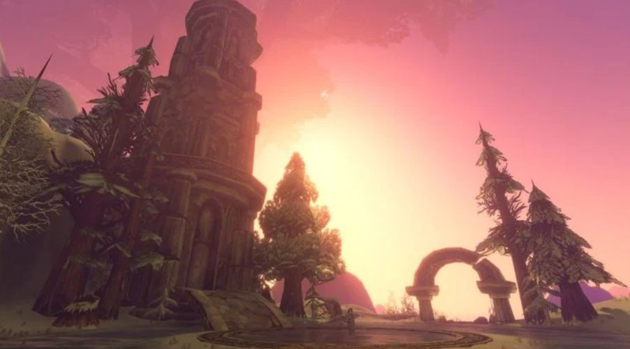

News › Améliorations graphiques
Les nouveaux graphismes de Forever pourraient arriver sur le WoW moderne
29 octobre 2026
Brouillard, lumière, ombres, eau : les améliorations graphiques de WoW Forever ont séduit. Interrogé par IGN, Kris Zierhut, développeur chez Blizzard, indique que l'équipe envisage de les apporter aussi au WoW moderne.

Ce qui change dans Forever
L'objectif de Blizzard : retrouver l'Azeroth dont les joueurs se souviennent, sans toucher à sa direction artistique si particulière. Trois chantiers avaient été présentés à la BlizzCon 2026.
- Un brouillard volumétrique. Il forme des nappes, se déplace, transporte poussière et particules et laisse passer la lumière. Chaque zone a son propre vent, qui influence ses mouvements. Depuis certains points en hauteur, on devrait aussi voir les terres lointaines.
- La lumière et les ombres. Le soleil et la lune éclairent maintenant dans la même direction que les ombres : le relief et les bâtiments bloquent correctement la lumière, et les ombres tournent au fil de la journée. La lumière rebondit aussi sur les surfaces en prenant leur couleur (illumination globale), grâce à un système de lancer de rayons maison.
- L'eau. La taille des vagues dépend de l'étendue d'eau, les rivières ont de vrais courants, l'eau contourne les obstacles en formant de l'écume, et les arbres, le soleil et la lune s'y reflètent. Sa transparence varie aussi avec la profondeur.
Bonne nouvelle pour les petites configurations : ces effets de lumière fonctionneraient même avec la configuration minimale requise par Forever. Et pour les nostalgiques, le jeu laisse le choix entre les modèles de personnages classiques et leurs versions HD.
Et pour le WoW moderne ?
Blizzard envisage d'apporter ces améliorations au WoW moderne (Retail), mais ce n'est pas encore un engagement ferme. Aucune date n'est annoncée : on ne sait pas encore si cela arriverait avec Midnight ou avec The Last Titan.
Source : interview des développeurs de Blizzard accordée à IGN, relayée par JudgeHype ↗